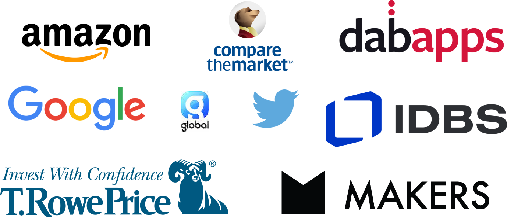

codebar is a global community empowering minorities to break into tech.
Since 2013, codebar has created opportunities for minority group members to pursue a career in tech. Over a span of 9 years, we have held more than 1,700 workshops and created a global community of over 22,000 students and coaches.
In this impact report, we assess how our initiatives have made careers in
tech more
accessible for
minorities from
all over the world.
This is achieved through findings captured in a community-wide survey, which will
drive
improvements in future
initiatives that further our cause.
Our work is an answer to the diversity problem in tech.
Ethnic minorities make up only 15.2% of the tech labour market in the UK, while women
are
just
slightly above
that
at 25.5%1. Diversity is still a major issue in the tech industry despite
being
one of the world’s fastest
growing
fields.
Through our initiatives, we provide education, training and networking opportunities
for members
of
underrepresented groups in tech. We believe in the strength that diversity brings and the importance of diverse
thinking in an industry where innovation is a constant.
Our global community
16,162 students and 5,878 coaches in over 30 chapters worldwide.
Gender
54.4%
Female
38.8%
Male
3.1%
Other
2.5%
Non-binary
0.6%
Trans female
0.6%
Trans male
Ethnicity
50.6%
White
11.3%
Asian
3.1%
Arab
8.8%
Black
3.1%
Hispanic
8.1%
Mixed
5%
Other
11.9%
Undefined
Age
8.8%
18-24
46.2%
25-34
28.1%
35-44
11.3%
45-54
5.6%
55 and above
Highest level of education
35%
Bachelor's degree
24.4%
Master's degree
13.6%
Undefined
10.6%
GCE A level
3.8%
Diploma
3.8%
PhD
3.8%
Other
2.5%
GCE O level
2.5%
IB Diploma
25.1%
identified as part of the LGBTQIA+ community
28% felt that codebar has also made a positive impact on their identity
57% find that our community is helpful and specialised
55.7% of our community are returning members
Aside from the years when we were hit by the global pandemic, our community has seen a steady growth of new joiners.
codebar's growth is 100% organic. Each chapter has started by someone in that community saying they want to make a change. It's a huge testament to the amazing community and the demand for change in the tech industry
Kimberley Cook, Director of codebar
Industry partners
The lack of diversity in tech is an issue that has garnered increasingly more attention over the years.
More and more companies have been making commitments to bolster inclusivity and diversity in their organisation, complete with key goals that they have pledged to meet. These companies include Twitter, Amazon, Google and more brands that codebar have partnered with in recent years.
codebar bridges tech companies to a rich talent pool of untapped potential.
Through industry partnerships, we have able to secure career opportunities for the codebar community.
In return, tech companies are able to gain access to a whole new talent pool of skilled prospective hires that bring so much to the table with their wealth of perspectives and experiences.
Big data, bigger opportunities
Compare the Market is one of the UK’s biggest price comparison websites that helps consumers make more informed purchasing decisions on insurance, utilities and financial products.
As a gold partner for 2 years running, they have played a significant role in helping our community adopt the skills they need to thrive in data-driven businesses.
Hosted 33 in-person workshops
Ran 2 panels
Organised 2 workshops
Employed 2 people through codebar Festival
Working together for the common good
codebar and Makers have a shared goal: To create a new generation of talent in tech. Makers offers bootcamps and apprenticeships for software engineers to jumpstart their careers.
By working together, both codebar and Makers are able to expand the opportunities available for minorities in tech.
Makers has been a community partner with us for 4 years. In that time, they have collaborated with us in events, educational initiatives, and even provided avenues for our community members to further their training.
Hosted 8 workshops
Ran 3 events in their London office
Gave 18 codebar members full scholarships to their bootcamp
We’ve also worked with:

Case studies
codebar has something for every community member to grow within a setting that suits them best. Over the years, our initiatives have grown from offering regular free workshops, to organising festivals, job fairs, and hosting community-run events.
When the world went into lockdown during the height of the COVID-19 pandemic, we shifted our initiatives online. The opportunity to learn from seasoned professionals from anywhere in the world was embraced by our community wholeheartedly, so much so that we have decided to move towards a hybrid way of running workshops and events - giving our community even more options to take them closer to their goals.
39% of our community did not work in tech before codebar
25% have found a job through codebar
codebar workshops
It all started with our workshops. To make tech careers more accessible, we began running regular free workshops in October 2013. These workshops take place within numerous chapters all over the world and are led by developers who choose to volunteer as coaches with us.
Through our workshops, we have created vibrant, collaborative environments for minorities to learn HTML/CSS, JavaScript, Ruby, Python or Git. Companies have also partnered with us to host these workshops at their spaces, therefore helping aspiring developers expand their industry exposure early in their careers.
Our workshops connect minorities to dedicated coaches who want to see them succeed.
1770 workshops and counting
codebar festival
First organised in 2021, codebar Festival is an annual 3-day virtual event that focuses on 3 key areas - coding, career and wellbeing. Attendees get to attend talks, panels and workshops. They also get to network and apply for openings through the festival’s job fair.
Due to its success in 2021, codebar Festival was organised again in 2022 and met with positive response for a second time running.
1,190 total attendees
421.6 mins average time spent per user
5,895 messages sent
9.5 average post-event survey score
codebar Festival empowers our community to take on a holistic approach to a tech career.
Day 1: Coding Day
Day 2: Career Day
Day 3: Wellness Day
Through codebar Festival, we have raised over £1,900 for these charities:
#uncodebar
uncodebar cultivates authentic spaces for genuine conversations and growth.
Now in its 8th year, uncodebar is an annual event that is 100% participant-led. It is our version of an unconference, which can be defined as a "loosely structured open space event emphasising the informal exchange of information and ideas between participants".
During uncodebar, community members propose talks, panels, workshops and decide which topics they’d like to focus on for the day before convening in separate breakout sessions. These topics include anything related to web development, software development, game development, learning, mentoring and community. Anyone is welcome to participate - whether you’re a seasoned developer or a first-time speaker.
uncodebar is a testament to the proactive and dedicated spirit of codebar. Everything lies in the hands of our community, and through their involvement, we grow and thrive as one.
Other community initiatives
Panel: How to Land your First Developer Role
24 Pull Requests: Our annual open source event dedicated to helping students contribute to open source. Held at the beginning of December.
Mind the Code: A full-day event dedicated to coding exercises and yoga
Intro to Android development
Intro to iOS
Intro to React Native
Ladies that UX
Intro to DevOps
CODE // EXPLORE // CREATE //: A workshop in creative-coding, building a musical eco-system in
which autonomous organisms roam, breed and feed, generating sound with their actions.
codebar hacks Monzo: A hackday using Mondo’s API to bring your ideas to life, with an opening lesson on how to use APIs.
Trans*Code: The UK’s first-ever hack event focused solely on drawing attention to transgender issues and opportunities.
Build your own Portfolio website
Micro:bit workshop
Kotlin Android Development Workshop
Teaching through Story-telling
CV workshop
Gender Pay Gap Data Hack
Git workshop
Kotlin Android Development Workshop
Practical 3D for the Web
Gender Pay Gap Data Hack
codebar gamedev afterwork
An exciting introduction to Machine Learning and Data Science for beginners
Gender Pay Gap Data Hack
Intro to Git workshop
Having Fun with Data and Pandas
codebar Open Day
Burn It Down and Start Again: Principles of Modern JavaScript
Careers Panel
Working In a Purpose Driven Startup Panel
Careers at Compare the Market panel
Virtual Introduction to Go
Exploring Non Developer Roles in Tech Panel with Compare the Market
Intro to Git and Github Workshops
Literary Festival with The Pragmatic Bookshelf
Pathways into Science and Tech Panel with Amazon
Product panel and Q and A with LYST
Build a Random Phrase Generator in Javascript with Boolean
More Robust Servers with Promises in Node.js - Standard
Learn about Continuous Integration with Compare the Market
Get to know a... series (7-part series)
Literary Festival with The Pragmatic Bookshelf
Pathways into Science and Tech Panel with Amazon
Product panel and Q and A with LYST
More Robust Servers with Promises in Node.js - Standard
Learn about Continuous Integration with Compare the Market
Intro to Git and Github Workshops
Build a Random Phrase Generator in Javascript with Boolean
Deploy an API using AWS services 'API Gateway' and 'Lambda'
Demystifying Public Speaking
Speedrunning Web Development: A Full Stack App In 10 Minutes
How to improve your technical writing
Ask an Artificial Intelligence Researcher Anything!
Let's talk about mobile development
Watch that scope - on Test Driven Development
Freelancing: Things To Know
Thoughts from our community
Coaches
codebar is a genuine community and genuine people who aren't in it for anything else other than to drive change.
It's amazing to have a platform that connects students and coaches. My interaction with the students has demonstrated that there are lots of technical talent out there, who comes from non-tech backgrounds and this platforms gives those students an opportunity to move into tech.
From a coaching perspective, codebar has helped me feel more confident in my skills when I help someone else solve a problem. I also love seeing how people who are new to tech are so interested and excited about its capabilities and it's very infectious!
codebar puts together learners and real developers. I initially came to codebar as a student and I was stuck in tutorial hell. Having someone IRL explain things to me made learning so much easier.
To me, codebar feels like a safe space to help people learn to code for the first time. It opens up networks between coaches and students which can build professional relationships outside of the codebar community to open up career opportunities.
Students
I met role models. I saw that developers are socially engaged and willing to help others, instead of the 'autistic hacker' idea that many people have. I met people from companies, telling me I can do what they do. I am quite a bit older than most and still the encouragement was there: Go for it.
It's great that codebar continues to provide an open opportunity for people to try some tech and see what it's like. The more diverse the people within the industry the better the software is generated which can only help
the industry.
I feel like I now have a place to go with my questions and a community that I can be part of where i see myself being represented. This is the first time that i've found this and i'm so excited to continue being a member.
I found the teaching and space to be inclusive and gentle which is exactly what I needed to start learning.
Codebar coaches are extremely dedicated, respectful, friendly and experienced individuals who really encourage students and are willing to give up their time to give advice and support that makes a massive difference to students.
Career switchers
I have gone from being a student (having been encouraged by people at work to go), to organising my local chapter and now coding full time for my job. codebar had a huge role in that, making me feel there was a place in the tech community for me and increasing my confidence that I could be a developer.
Before codebar I was an Elementary School teacher. I attended out of curiosity and it led me to find a more complete course in coding and eventually found a job in the industry.
codebar gave me an initial boost learning python. I attended something like 10-15 workshops where I received excellent instruction from the coaches. This gave me the skills and confidence to work on my own projects, and I eventually got a job in tech about a year later.
I managed to gain confidence to complete most of my university tasks and apply for tech roles. Got help with
interview readiness which has helped me land an internship with Marsh as a Cyber Security Analyst.
I found my current job through Codebar festival. I've met a wide range of incredibly knowledgeable and empathic mentors who have helped me with all aspects of my career development. It has made me feel more like I belong in tech and that my presence is valuable there.
What's next for codebar?
We’ve had an amazing 9 years, and we’re excited to keep providing opportunities for minorities to break into tech in 2023 and beyond.

codebar has made a huge difference to the tech industry so far - placing thousands of people in tech jobs and building an inclusive community.
There’s still lots more we can do to address the industry’s diversity issue, and as an organisation that puts our community first, we’ll be working closely with our members to evolve our offerings.
We’ll be operating a hybrid model going forward. Our in-person workshops with continue to expand globally, with new locations set to start soon. Our virtual events shall continue, with more one-off custom events with companies in the pipeline. We’ll be running codebar Festival again in 2023, with a bigger job fair element.
Our close work with our sponsors will continue, using their knowledge and expertise to help our community join the tech industry.
Everyone at codebar wants to say the biggest thank you to every single person who has ever attended, or volunteered at one of our events. We would not have been able to teach over 16,000 people if it were not for your amazing support of everything we do. You really are the backbone to everything we do!
We also want to give a big thank you to all the companies who have supported us over the last 9 years, your support of our mission has made tech a more inclusive industry to be involved in.
We look forward to many more years of teaching people to code for free.